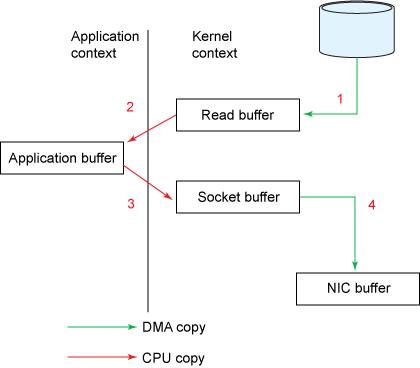

Table of Contents
Laborator 10 - Operații IO avansate - Windows
Materiale ajutătoare
Nice to read
- WSP4 - Chapter 14, Asynchronous Input/Output and Completion Ports
Windows - I/O asincron (overlapped)
Operațiile de intrare/ieșire sunt mai lente decât operațiile de procesare din cauza întârzierilor cauzate de:
- timpul de access la sectoarele hard-disk-urilor
- rata de transfer scăzută dintre hard-disk și memoria RAM
- transferul de date peste rețea
În Laboratorul 2 au fost studiate operațiile I/O sincrone: firul de execuție apelant așteaptă până când operația de I/O se încheie. În cadrul acestui laborator vom afla cum un fir de execuție poate începe o operație de I/O și continuă fără a aștepta ca acea operație de I/O să se încheie, adică cum poate efectua o operație asincronă. În final, o dată ce operațiile asincrone au fost înțelese vom analiza I/O Completion Ports, cel mai eficient model de procesare a cererilor I/O, utilizat în construcția serverelor scalabile.
În Windows există trei modalități de realizare a operațiilor asincrone. Acestea diferă atât în modul folosit pentru a porni operațiile de I/O, cât și în modul prin care se determină dacă operația s-a încheiat:
multithreaded I/O: fiecare fir de execuție efectuează operații I/O normale, însă celelalte fire își pot continua execuțiaoverlapped I/O cu așteptare: un fir de execuție își continuă execuția după începerea unei operații de I/O. Un fir de execuție (posibil altul decât cel care a inițiat operația I/O) care are nevoie de rezultatele operației de I/O, va așteapta fie pe unfile handle, fie pe un eveniment specificat în structura overlapped folosită de cătreReadFileșiWriteFileoverlapped I/O cu rutine de terminare: sistemul de operare apelează o anumitărutină de terminare(completion routine) atunci când respectiva operație de I/O s-a încheiat. Acest tip de operație asincronă mai poartă și numele deextended I/O, nume derivat din cel al funcțiilor folositeWriteFileExșiReadFileEx.
În continuare vom trata doar cazul operațiilor de tipul overlapped I/O cu așteptare.
Overlapped I/O cu așteptare
FILE_FLAG_OVERLAPPED
Prima cerință pentru operațiile I/O asincrone indiferent dacă sunt suprapuse (overlapped) sau extinse este setarea atributului overlapped al handle-ului unui fișier. Acest lucru se realizează prin specificarea flag-ului FILE_FLAG_OVERLAPPED pentru parametrul dwAttrsAndFlags la apelul funcției CreateFile (sau orice alt apel care creează fișiere, pipe-uri cu nume etc.):
HANDLE hFile = CreateFile("io.txt", GENERIC_READ, 0, NULL, OPEN_EXISTING, FILE_FLAG_OVERLAPPED, /* this must be specified */ NULL);
Operațiile I/O pe handle-uri care au flag-ul FILE_FLAG_OVERLAPPED setat (handle-uri asincrone) au un comportament special:
- O valoare
FALSEîntoarsă nu indică în mod obligatoriu eșecul apelului. ValoareaFALSEîntoarsă de funcțiileReadFile,WriteFileindică eșecul în cazul operațiilor de I/O sincrone. În cazul operațiilor I/O asincrone, funcțiaGetLastErrorva întoarceERROR_IO_PENDINGceea ce indică faptul că operația se desfășoară asincron. - Numărul de octeți transferați este de asemenea nefolositor dacă operația nu s-a încheiat.
- Se pot face mai multe operații asincrone de citire/scriere pe același fișier, deci nici
file pointer-ul nu mai poate fi utilizat.
Structura Overlapped
Al doilea pas este transmiterea unei structuri de tip OVERLAPPED ca parametru ori de câte ori se face un apel ReadFile/ WriteFile.
Structura OVERLAPPED conține informația folosită în operațiile I/O și arată astfel:
typedef struct _OVERLAPPED { ULONG_PTR Internal; /* the error code for the I/O request*/ ULONG_PTR InternalHigh; /* the number of bytes transferred */ union { /* the file position at which to start the I/O request */ struct { DWORD Offset; DWORD OffsetHigh; } ; PVOID Pointer; /* reserved */ } ; HANDLE hEvent; /* handle to the event - is set to signaled when operation has completed */ } OVERLAPPED, *LPOVERLAPPED;
Structura OVERLAPPED este utilă pentru că:
- Un program poate porni mai multe operații asincrone de citire sau scriere pe un singur handle de fișier asincron. File pointer-ul asociat cu file handle-ul nu mai are nicio însemnătate.
- Un program trebuie să fie capabil să aștepte terminarea operațiilor I/O asincrone. În cazul în care mai multe operații I/O asincrone sunt pornite, programul trebuie să poată determina care dintre operații s-au terminat. Operațiile asincrone nu se termină în mod obligatoriu în ordinea în care au fost pornite.
OVERLAPPED.
- O structură
OVERLAPPEDnu trebuie refolosită până când operația de I/O asociată nu s-a încheiat. - Dacă există mai multe operații I/O este indicată folosirea evenimentelor pentru sincronizare.
Evenimentul hEvent trebuie creat de utilizator și trebuie să fie de tip manual-reset (Vezi laboratorul 9). Când o operație I/O asincronă se termină, evenimentul rămâne în starea signaled până când este utilizat în altă operație I/O asincronă. Acest lucru este util pentru că putem avea mai multe fire de execuție care să aștepte după aceeași operație asincronă.
Așteptarea și interogarea operațiilor asincrone
Pentru determinarea stării operației asincrone se poate folosi funcția GetOverlappedResult. În cazul unei operații OVERLAPPED apelurile ReadFile/ WriteFile se vor întoarce imediat. În cele mai multe cazuri, operația de I/O nu se va termina imediat astfel că apelurile ReadFile/ WriteFile vor întoarce FALSE, iar funcția GetLastError va întoarce ERROR_IO_PENDING. Dacă totuși rezultatul întors este TRUE, înseamnă că operația s-a efectuat și puteți cere imediat rezultatul.
Așteptarea după o operație I/O asincronă se poate face după oricare dintre următoarele:
- Handle-ul evenimentului specificat în structura
OVERLAPPED- în caz că se dorește ca unul sau mai multe fire de execuție să aștepte după aceeași operație asincronă. - Handle-ul fișierului - caz în care doar un singur fir de execuție va aștepta după operația asincronă (parametrul
hEvental structuriiOVERLAPPEDeste lăsat NULL)
După așteptarea pe un obiect de sincronizare (un event sau un handle de fișier) ca operația de I/O să se termine, trebuie să determinăm câți octeți au fost transferați. Acesta este scopul de bază al funcției GetOverlappedResult.
BOOL WINAPI GetOverlappedResult( HANDLE hFile, LPOVERLAPPED lpOverlapped, LPDWORD lpNumberOfBytesTransferred, BOOL bWait ); |
GetOverlappedResult( myHandle, /* handle of file or event */ &ov, /* overlapped structure */ &nRead, /* actual bytes transferred */ TRUE); /* wait for the operation to finish */ |
HANDLE hFile; OVERLAPPED ov; DWORD bytesTransferred; /* TODO ... start overlapped I/O operation */ /* wait for completion */ GetOverlappedResult(hFile, &ov, &bytesTransferred, TRUE);
Obiectul hFile și structura ov sunt folosite pentru a identifica unic operația de I/O a cărei stare dorim să o aflăm.
Dacă parametrul bWait este TRUE, funcția GetOverlappedResult va aștepta până când operația de I/O specificată se termină, în caz contrar se va întoarce imediat. În ambele cazuri funcția va întoarce TRUE doar dacă operația de I/O s-a terminat cu succes.
Mai jos regăsiți un exemplu de așteptare a terminării unei operații I/O Overlapped folosind ca obiect de sincronizare un eveniment. Exemplul prezintă folosirea unei operații de citire asincronă:
#include "utils.h" #include <windows.h> #include <stdlib.h> #define BUF_SIZE 1024 * 1024 // 1MB int main(int argc, char **argv) { OVERLAPPED ov; HANDLE hFile; HANDLE hEvent; DWORD dwRet, dwErr, dwBytesRead; char *buffer = malloc(BUF_SIZE * sizeof(char)); /* Make sure overlapped structure is clean */ ZeroMemory(&ov, sizeof(ov)); memset(buffer, 0, BUF_SIZE); /* Create manual-reset event */ hEvent = CreateEvent(NULL, TRUE, FALSE, NULL); DIE(hEvent == INVALID_HANDLE_VALUE, "CreateEvent"); ov.hEvent = hEvent; hFile = CreateFile(argv[1], GENERIC_READ, /* access mode */ FILE_SHARE_READ, /* sharing option */ NULL, /* security attributes */ OPEN_EXISTING, /* open only if it exists */ FILE_FLAG_OVERLAPPED,/* file attributes */ NULL); /* no template */ DIE(hFile == INVALID_HANDLE_VALUE, "CreateFile"); dwRet = ReadFile(hFile, buffer, BUF_SIZE, &dwBytesRead,&ov); if (dwRet == FALSE) { dwErr = GetLastError(); switch (dwErr) { case ERROR_HANDLE_EOF: printf("End of File Reached\n"); break; case ERROR_IO_PENDING: /* async io not ready */ printf("Async IO not finished immediately\n"); /* do some other work in the meantime */ Sleep(1); /* Wait for it to finish */ dwRet = GetOverlappedResult(ov.hEvent, &ov, &dwBytesRead, TRUE); printf("nRead = %d\n", dwBytesRead); break; default: /* ReadFile failed */ PrintLastError("ReadFile"); } } else { printf("Async IO finished immediately\n"); printf("%d \n", dwBytesRead); } dwRet = CloseHandle(hFile); DIE(dwRet == FALSE, "CloseHandle"); dwRet = CloseHandle(hEvent); DIE(dwRet == FALSE, "CloseHandle"); return 0; }
Windows - I/O Completion Ports
Mecanismul de completion ports este cel mai scalabil dintre toate cele prezentate până acum. Un server care folosește completion ports poate face față la foarte multe (zeci de mii) conexiuni simultan, fără probleme prea mari. Celelalte metode își ating limitările cu mult înainte.
Un completion port este un obiect în kernel cu care se asociază alți descriptori (fișiere, sockeți) și prin intermediul căruia se transmit notificările de completare ale unor operații asincrone lansate anterior. Un completion port are asociat un pool de worker threads. Aceste fire de execuție așteaptă să primească notificări de completare a operațiilor asincrone. În momentul în care un fir de execuție primește o notificare va deveni activ și va lucra o perioadă până se va întoarce din nou așteptând următoarea notificare.

Crearea unui completion port
Funcția CreateIoCompletionPort are dublu rol:
- creează un nou completion port
- adaugă un nou handle pe care se va aștepta terminarea unei operații I/O
Pentru crearea unui completion port se folosește funcția CreateIoCompletionPort ca în exemplul de mai jos:
HANDLE WINAPI CreateIoCompletionPort( HANDLE FileHandle, HANDLE ExistingCompletionPort, ULONG_PTR CompletionKey, DWORD NumberOfConcurrentThreads ); |
HANDLE iocp = CreateIoCompletionPort( INVALID_HANDLE_VALUE, /* New Completion Port */ NULL, NULL, 0 /* No threads = No Procs */ ); |
Pentru crearea unui nou completion port, primul parametru trebuie să fie INVALID_HANDLE_VALUE. În acest caz, ultimul parametru indică numărul maxim de fire de execuție concurente care pot rula. În caz că se specifică 0, atunci numărul de fire de execuție concurente este setat la numărul de procesoare.
Adăugarea unui descriptor la completion port
Pentru adăugarea unui descriptor deschis cu opțiunea de overlapped I/O la completion port se folosește tot funcția CreateIoCompletionPort. În această situație primul argument va fi handle-ul fișierului/socket-ului care se dorește adăugat, iar al doilea handle-ul completion port-ului obținut la crearea acestuia:
HANDLE iocp; HANDLE hFile; /* create completion port */ iocp = CreateIoCompletionPort(INVALID_HANDLE_VALUE, NULL, (ULONG_PTR) NULL, 0); /* open file for overlapped I/O */ hFile = CreateFile(..., FILE_FLAG_OVERLAPPED, ...); /* add file handle to completion port */ CreateIoCompletionPort(hFile, iocp, (ULONG_PTR) hFile /* use handle as key */, 0);
După cum se observă, în cazul creării unui completion port, al doilea argument este NULL. La adăugarea unui handle de fișier la completion port al doilea argument este handle-ul de completion port. Al treilea argument este o cheie care va fi folosită pentru identificarea handle-ului în momentul recepționării unei notificări.
Așteptarea încheierii unei operații asincrone
Firele de execuție worker sunt folosite pentru așteptarea încheierii operațiilor asincrone și a prelucrărilor ulterioare. Firele de execuție vor primi notificări de la handle-ul completion port-ului folosind funcția GetQueuedCompletionStatus:
BOOL WINAPI GetQueuedCompletionStatus(
HANDLE CompletionPort,
LPDWORD lpNumberOfBytes,
PULONG_PTR lpCompletionKey,
LPOVERLAPPED *lpOverlapped,
DWORD dwMilliseconds
);
|
bRet = GetQueuedCompletionStatus( iocp, /* completion port handle */ &bytes, /* actual bytes transferred */ &key, /* return key to indentify the operation */ &ov, /* overlapped structure used */ INFINITE /* wait time */ ); |
Pe baza cheii obținute se poate determina handle-ul care a generat notificarea.
Exemplu de folosire completion ports
În exemplul de mai jos este prezentată folosirea mecanismului de completion ports în cazul operațiilor asincrone pe sockeți. Exemplul este similar cu cel prezentat în secțiunile dedicate funcțiilor de multiplexare I/O pe Linux. Există un fir de execuție worker care va aștepta primirea notificărilor la completion port, iar firul de execuție principal va fi responsabil cu primirea de cereri de conexiune (apeluri accept).
HANDLE iocp; /*** main thread ***/ SOCKET listenfd, sockfd; /* listener socket; connection socket */ /* create I/O completion port */ iocp = CreateIoCompletionPort(INVALID_HANDLE_VALUE, NULL, (ULONG_PTR) NULL, 0); /* TODO ... create server socket (listener) */ /* TODO ... create worker thread */ while (1) { /* server loop */ /* TODO ... accept connections */ /* add socket to completion port */ CreateIoCompletionPort(sockfd, iocp, (ULONG_PTR) sockfd/* use handle as key */, 0); /* TODO ... start asynchronous operation */ } /*** worker thread ***/ DWORD bytes; ULONG_PTR key; LPOVERLAPPED ov; while (1) { /* wait for notification */ GetQueuedCompletionStatus(iocp, &bytes, &key, &ov, INFINITE); /* TODO ... process request */ }
Zero-copy I/O
Zero-copy se referă la tehnica prin care procesorul evită operațiile de copiere a datelor dintr-o zonă de memorie într-alta. Operațiile zero-copy reduc numărul de schimbări de context între spațiul utilizator și spațiul kernel, resursele sistemului fiind utilizate eficient.
Dacă o aplicație dorește să transmită date dintr-un fișier pe un socket, va folosi în mod normal schema: 
{kind=link}
Se observă că există multiple copieri cu aceleași date. O schemă mai eficientă, care elimină două dintre copierile în plus și totodată două context-switch-uri, este aceasta:

Mai multe detalii, inclusiv explicarea mai pe larg a contextului, puteți găsi aici.
TransmitFile
Apelul TransmitFile este folosit pentru a eficientiza transmiterea de fișiere în rețea. TransmitFile folosește cache-ul sistemului de operare. Este o operație zero-copy - nu necesită alocarea de buffere în user-space și diminuează numărul de apeluri de sistem.
Pentru a transmite un fișier, acesta trebuie deschis folosind flag-ul FILE_FLAG_OVERLAPPED. Apelul TransmitFile primește ca argument socket-ul pe care se realizează comunicația și handle-ul fișierului de trimis.
BOOL TransmitFile( SOCKET hSocket, HANDLE hFile, DWORD nNumberOfBytesToWrite, DWORD nNumberOfBytesPerSend, LPOVERLAPPED lpOverlapped, LPTRANSMIT_FILE_BUFFERS lpTransmitBuffers, DWORD dwFlags ); |
result = TransmitFile( hSocket, /* destination socket handle */ hFile, /* source file handle */ 0, /* nr bytes to write. 0 == send entire file */ 0, /* block size. 0 == default block size */ &ov, /* overlapped I/O structure */ NULL, 0 ); |
O funcție similară este funcția TransmitPackets care transmite date stocate în memorie pe un socket folosind cache-ul intern al sistemului de operare. Datele sunt reprezentate de o structură TRANSMIT_PACKETS_ELEMENT.
Exerciții de laborator
Exercițiul 0 - Joc interactiv (2p)
- Detalii desfășurare joc.
Windows (9p)
În rezolvarea laboratorului folosiți arhiva de sarcini lab10-tasks.zip
Exercițiul 1 - Test operații asincrone (1p)
Setați proiectul 1-test_overlapp ca default ( detalii aici).
Programul realizează citirea unui buffer de 64KB dintr-un fișier, folosind operații overlapped.
Compilați și testați programul:
.\1-test_overlapp.exe C:\WINDOWS\explorer.exe
Exercițiul 2 - Zero-copy/TransmitFile (2p)
Un client dorește să trimită serverului un fișier folosind operații zero-copy IO.
Intrați în proiectul 2-transmit și parcurgeți fișierele sock_util.h, sock_util.c, server.c și transmit_client.c. Completați funcțiile marcate cu TODO din fișierul transmit_client.c. Clientul transmite fișierul folosind TransmitFile. Folosiți NULL pentru argumentul de tipul LPOVERLAPPED.
Puteți genera fișiere de test folosind proiectul generator:
.\generator.exe size output_file
size este dimensiunea în octeți pe care doriți să o aibă fișierul; de exemplu 1024, iar output_file este numele fișierului creat.
Într-o consolă porniți serverul și într-o altă consolă clientul. Serverul este implementat în cadrul proiectului 2-transmit-server din Visual Studio. Compilați acel proiect pentru a obține executabilul 2-transmit-server cu care se pornește serverul. Serverul este pornit primul folosind comanda
.\2-transmit-server
Clientul este pornit al doilea folosind comanda
.\2-transmit-client output_file
În urma rulării serverul generează fișierul output.dat. Pentru a valida transferul corect al fișierului de la client la server folosiți comanda
comp output_file output.dat
Comanda vă va preciza dacă cele două fișiere sunt identice sau nu.
Exercițiul 3 - Operații sincrone/asincrone (3p)
Ne propunem să realizăm implementarea unor operații io asincrone pentru popularea unor fișiere cu conținut.
Intrați în proiectul 3-aio/ și urmăriți implementarea funcției do_io_sync și implementați do_io_async.
Alocați spațiu pentru structurile OVERLAPPED pentru toate cele 4 fișiere. Pentru inițializarea structurilor OVERLAPPED se recomandă implementarea funcției init_overlapped. În cadrul funcției init_overlapped “zero-izați” structura de tipul OVERLAPPED și apoi completați câmpurile aferente parametrilor transmiși.
Când apelați funcția init_overlapped (din cadrul funcției do_io_async), folosiți valorea 0 ca argument pentru offset și NULL pentru event (nu vom folosi event ca să notifice de încheierea operației). Funcția init_overlapped este apelată într-un ciclu for, pentru fiecare element al array-ului ov. Folosiți GetOverlappedResult pentru realizarea operațiilor asincrone pe cele 4 fișiere. Funcțiile trebuie să scrie conținutul bufferului g_buffer în cele 4 fișiere cu numele dat de vectorul files. Folosiți macro-ul IO_OP_TYPE pentru a determina comportamentul programului (revedeți secțiunea despre Overlapped IO)
Rulați programul compilat folosind comanda:
.\3-aio
Dacă ați lucrat corect, în urma rulării comenzii de mai sus se vor genera în directorul curent 4 fișiere text (cu extensia .txt) de dimensiune BUFSIZ, conținând caractere random.
Exercițiul 4 - I/O completion ports (3p)
Vom folosi API-ul de I/O completion ports.
Crearea unui completion ports (1p)
Intrați în proiectul 4-iocp/ și analizați conținutul fișierelor iocp.h și iocp.c. Completați cele 4 funcții definite în fișierul iocp.c (revedeți secțiunea despre IO completion ports).
Operații I/O asincrone cu I/O completion ports (2p)
Analizați conținutul fișierului aio.c. Scopul exercițiului este folosirea I/O completion ports pentru așteptarea încheierii operațiilor I/O asincrone (overlapped I/O).
Implementați funcțiile init_io_async și do_io_async. În funcția do_io_async înainte de a trimite o cerere folosind WriteFile, folosiți funcția init_overlapped pentru a inițializa elementul aferent al vectorului ov.
Compilați și rulați programul.